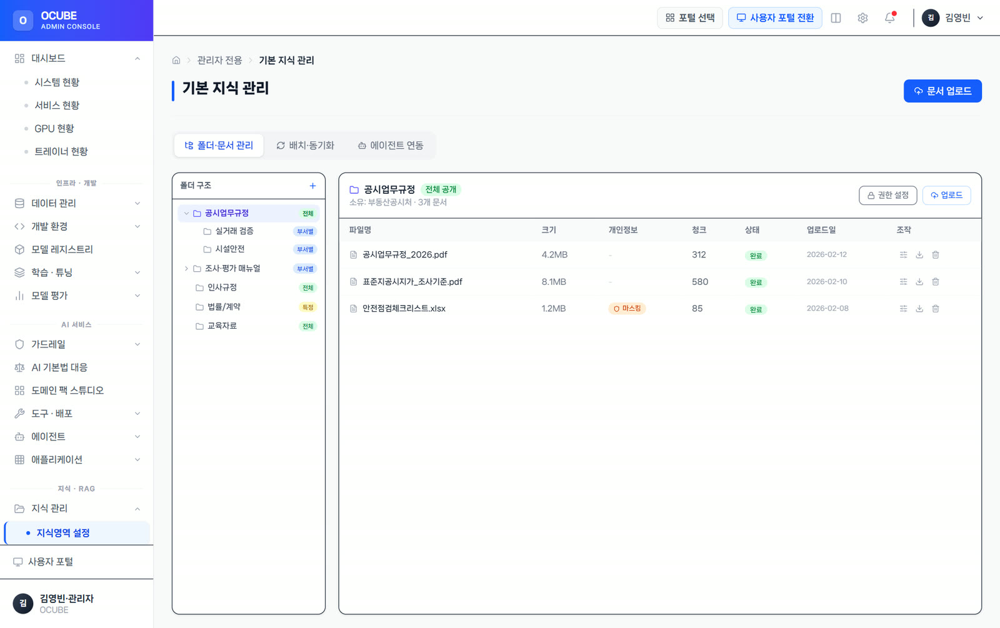
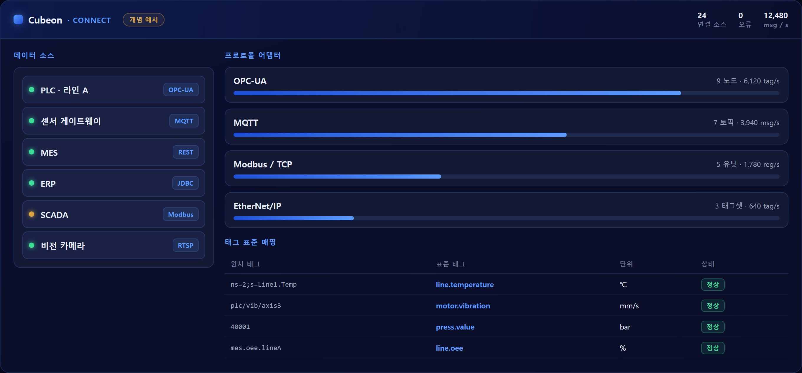

제지 공정 AI-OT 데이터 허브
분산제어·품질관리·설비제어 데이터를 시간·설비·생산 작업 기준으로 정렬합니다.
설비·업무 시스템·문서를 하나의 데이터 언어로 정리합니다.AI가 신뢰할 수 있는 표준 데이터와 지식 기반을 만듭니다.

설비 제어기·
표와 도면이 섞인 현장 문서를 의미 단위로 정제, 문자 인식(OCR)·
공통 스키마·
품질 규칙과 계보 추적으로 데이터 신뢰도 관리 — 변화 감지 시 재학습·
QData는 부서·
정리된 데이터는 관제·

현장 소스를 연결하고 품질을 확인해 공통 의미로 정리합니다.
산업 프로토콜부터 MES·
새 설비는 커넥터를 더해 확장합니다.

소스·어댑터 관리 — 개념 예시 화면(실제 UI 아님)
설비마다 다른 태그와 코드를 온톨로지로 정리합니다.
문서·
지식 관리 콘솔 — 프로토타입 예시 화면
문서·

지식 검색 — 프로토타입 예시 화면
산업 데이터 상호운용 표준과 데이터 관리 관행을 참조해 설계합니다.
제품 기능이 실제 현장 과제와 어떻게 연결되는지 보여주는 대표 경험입니다.
분산제어·품질관리·설비제어 데이터를 시간·설비·생산 작업 기준으로 정렬합니다.
충전기 상태·이용·이벤트 데이터를 표준화해 운영 관제와 분석에 제공합니다.
영상·위치·모션·환경 센서 데이터를 작업자와 현장 기준으로 연결합니다.
데이터가 흩어져 AI 도입을 시작하기 어려운 조직에 적합합니다.
태그 체계와 단위가 라인마다 달라, 검증할 때마다 정제부터 다시 하느라 모델 고도화에 시간을 못 쓰는 조직
제어망의 설비 데이터와 업무망의 MES·
작업표준서·
외부 반출이 불가능한 데이터를 내부에 둔 채로 표준화와 AI 활용 기반을 갖춰야 하는 공공·